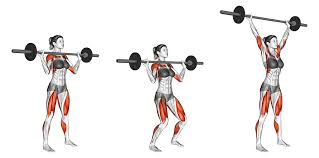
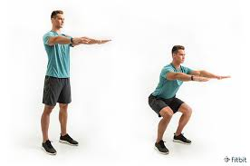
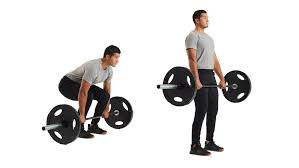
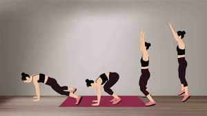
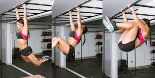

Push Jerk
The push jerk is a compound movement that combines a powerful leg drive with an overhead press. It's commonly used in weightlifting and CrossFit to develop strength and power in the upper body and lower body.
Air Squat
The air squat is a fundamental bodyweight exercise that targets the lower body muscles, including the quadriceps, hamstrings, and glutes. It helps improve lower body strength, stability, and mobility.
Barbell Deadlift
The barbell deadlift is a compound exercise that targets the posterior chain muscles, including the lower back, glutes, and hamstrings. It's one of the most effective exercises for building overall strength and muscle mass.
Ring Muscle Up
The ring muscle up is an advanced gymnastic movement that involves pulling yourself up on rings and transitioning into a dip position above the rings. It requires upper body strength, coordination, and control.

Burpees
Burpees are a full-body exercise that combines a squat, plank, push-up, and jump. They're an excellent cardiovascular exercise that also helps improve strength, endurance, and agility.
Knees to Elbows
Knees to elbows is a core-strengthening exercise that targets the abdominal muscles, particularly the rectus abdominis and obliques. It involves hanging from a bar and bringing your knees up to touch your elbows.
Toes to Bar
Toes to bar is an advanced core exercise that involves hanging from a bar and lifting your legs until your toes touch the bar. It targets the abdominal muscles, hip flexors, and grip strength.